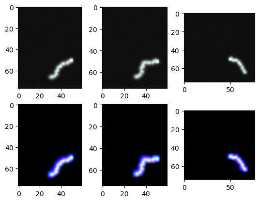

Tracking Inference
[1]:
%load_ext autoreload
%autoreload 2
%matplotlib inline
[2]:
import json
import sys
import torch
sys.path.append("../")
from environments.sac_tracking_env import Environment
from models import ResNet3D, ResidualBlock3D, ConvNet
from solvers import sac
DEVICE = "cuda:0" if torch.cuda.is_available() else "cpu"
dtype = torch.float32
Instantiate environment
[8]:
config_file = "../configs/sac_inference_curves_with_artifacts.json"
with open(config_file) as f:
params = json.load(f)
img_path = params["img_path"]
outdir = params["outdir"]
name = params["name"]
step_size = params["step_size"] if "step_size" in params else 1.0
step_width = params["step_width"] if "step_width" in params else 1.0
alpha = params["alpha"] if "alpha" in params else 1.0
beta = params["beta"] if "beta" in params else 1e-3
friction = params["friction"] if "friction" in params else 1e-4
patch_radius = 17
if "classifier_weights" in params:
classifier_path = params["classifier_weights"]
classifier_state_dict = torch.load(classifier_path)#, weights_only=True)
classifier = ResNet3D(ResidualBlock3D, [3, 4, 6, 3], num_classes=1)
classifier = classifier.to(device=DEVICE, dtype=dtype)
classifier.load_state_dict(classifier_state_dict)
classifier.eval()
else:
classifier = None
env = Environment(img_path,
radius=patch_radius,
step_size=step_size,
step_width=step_width,
max_len=10000,
alpha=alpha,
beta=beta,
friction=friction,
classifier=classifier)
Instantiate actor network
[9]:
in_channels = 4
actor = ConvNet(chin=in_channels, chout=4)
actor = actor.to(device=DEVICE,dtype=dtype)
if "sac_weights" in params:
sac_path = params["sac_weights"]
state_dicts = torch.load(sac_path)
actor.load_state_dict(state_dicts["policy_state_dict"])
Perform tracking
[10]:
sac.inference(env, actor, outdir, save=False)
11%|█ | 107/1000 [02:06<17:37, 1.18s/it]
---------------------------------------------------------------------------
AttributeError Traceback (most recent call last)
File ~/anaconda3/envs/tractography/lib/python3.12/site-packages/PIL/ImageFile.py:554, in _save(im, fp, tile, bufsize)
553 try:
--> 554 fh = fp.fileno()
555 fp.flush()
AttributeError: '_idat' object has no attribute 'fileno'
During handling of the above exception, another exception occurred:
KeyboardInterrupt Traceback (most recent call last)
Cell In[10], line 1
----> 1 sac.inference(env, actor, outdir, save=False)
File ~/neurotrack/notebooks/../solvers/sac.py:507, in inference(env, actor, outdir, n_trials, show, save)
505 shell = get_ipython().__class__.__name__ # type: ignore
506 if shell:
--> 507 show_state(env, fig)
508 print(f"num branches: {len(env.finished_paths)}")
509 except NameError:
File ~/neurotrack/notebooks/../plot/show_state.py:32, in show_state(env, fig, returns, rewards, policy_loss)
29 ax[8].plot(policy_loss)
30 ax[8].set_title("policy loss")
---> 32 display(fig)
35 return
File ~/anaconda3/envs/tractography/lib/python3.12/site-packages/IPython/core/display_functions.py:298, in display(include, exclude, metadata, transient, display_id, raw, clear, *objs, **kwargs)
296 publish_display_data(data=obj, metadata=metadata, **kwargs)
297 else:
--> 298 format_dict, md_dict = format(obj, include=include, exclude=exclude)
299 if not format_dict:
300 # nothing to display (e.g. _ipython_display_ took over)
301 continue
File ~/anaconda3/envs/tractography/lib/python3.12/site-packages/IPython/core/formatters.py:182, in DisplayFormatter.format(self, obj, include, exclude)
180 md = None
181 try:
--> 182 data = formatter(obj)
183 except:
184 # FIXME: log the exception
185 raise
File ~/anaconda3/envs/tractography/lib/python3.12/site-packages/decorator.py:232, in decorate.<locals>.fun(*args, **kw)
230 if not kwsyntax:
231 args, kw = fix(args, kw, sig)
--> 232 return caller(func, *(extras + args), **kw)
File ~/anaconda3/envs/tractography/lib/python3.12/site-packages/IPython/core/formatters.py:226, in catch_format_error(method, self, *args, **kwargs)
224 """show traceback on failed format call"""
225 try:
--> 226 r = method(self, *args, **kwargs)
227 except NotImplementedError:
228 # don't warn on NotImplementedErrors
229 return self._check_return(None, args[0])
File ~/anaconda3/envs/tractography/lib/python3.12/site-packages/IPython/core/formatters.py:343, in BaseFormatter.__call__(self, obj)
341 pass
342 else:
--> 343 return printer(obj)
344 # Finally look for special method names
345 method = get_real_method(obj, self.print_method)
File ~/anaconda3/envs/tractography/lib/python3.12/site-packages/IPython/core/pylabtools.py:170, in print_figure(fig, fmt, bbox_inches, base64, **kwargs)
167 from matplotlib.backend_bases import FigureCanvasBase
168 FigureCanvasBase(fig)
--> 170 fig.canvas.print_figure(bytes_io, **kw)
171 data = bytes_io.getvalue()
172 if fmt == 'svg':
File ~/anaconda3/envs/tractography/lib/python3.12/site-packages/matplotlib/backend_bases.py:2204, in FigureCanvasBase.print_figure(self, filename, dpi, facecolor, edgecolor, orientation, format, bbox_inches, pad_inches, bbox_extra_artists, backend, **kwargs)
2200 try:
2201 # _get_renderer may change the figure dpi (as vector formats
2202 # force the figure dpi to 72), so we need to set it again here.
2203 with cbook._setattr_cm(self.figure, dpi=dpi):
-> 2204 result = print_method(
2205 filename,
2206 facecolor=facecolor,
2207 edgecolor=edgecolor,
2208 orientation=orientation,
2209 bbox_inches_restore=_bbox_inches_restore,
2210 **kwargs)
2211 finally:
2212 if bbox_inches and restore_bbox:
File ~/anaconda3/envs/tractography/lib/python3.12/site-packages/matplotlib/backend_bases.py:2054, in FigureCanvasBase._switch_canvas_and_return_print_method.<locals>.<lambda>(*args, **kwargs)
2050 optional_kws = { # Passed by print_figure for other renderers.
2051 "dpi", "facecolor", "edgecolor", "orientation",
2052 "bbox_inches_restore"}
2053 skip = optional_kws - {*inspect.signature(meth).parameters}
-> 2054 print_method = functools.wraps(meth)(lambda *args, **kwargs: meth(
2055 *args, **{k: v for k, v in kwargs.items() if k not in skip}))
2056 else: # Let third-parties do as they see fit.
2057 print_method = meth
File ~/anaconda3/envs/tractography/lib/python3.12/site-packages/matplotlib/backends/backend_agg.py:496, in FigureCanvasAgg.print_png(self, filename_or_obj, metadata, pil_kwargs)
449 def print_png(self, filename_or_obj, *, metadata=None, pil_kwargs=None):
450 """
451 Write the figure to a PNG file.
452
(...)
494 *metadata*, including the default 'Software' key.
495 """
--> 496 self._print_pil(filename_or_obj, "png", pil_kwargs, metadata)
File ~/anaconda3/envs/tractography/lib/python3.12/site-packages/matplotlib/backends/backend_agg.py:445, in FigureCanvasAgg._print_pil(self, filename_or_obj, fmt, pil_kwargs, metadata)
440 """
441 Draw the canvas, then save it using `.image.imsave` (to which
442 *pil_kwargs* and *metadata* are forwarded).
443 """
444 FigureCanvasAgg.draw(self)
--> 445 mpl.image.imsave(
446 filename_or_obj, self.buffer_rgba(), format=fmt, origin="upper",
447 dpi=self.figure.dpi, metadata=metadata, pil_kwargs=pil_kwargs)
File ~/anaconda3/envs/tractography/lib/python3.12/site-packages/matplotlib/image.py:1676, in imsave(fname, arr, vmin, vmax, cmap, format, origin, dpi, metadata, pil_kwargs)
1674 pil_kwargs.setdefault("format", format)
1675 pil_kwargs.setdefault("dpi", (dpi, dpi))
-> 1676 image.save(fname, **pil_kwargs)
File ~/anaconda3/envs/tractography/lib/python3.12/site-packages/PIL/Image.py:2605, in Image.save(self, fp, format, **params)
2602 fp = cast(IO[bytes], fp)
2604 try:
-> 2605 save_handler(self, fp, filename)
2606 except Exception:
2607 if open_fp:
File ~/anaconda3/envs/tractography/lib/python3.12/site-packages/PIL/PngImagePlugin.py:1488, in _save(im, fp, filename, chunk, save_all)
1484 single_im = _write_multiple_frames(
1485 im, fp, chunk, mode, rawmode, default_image, append_images
1486 )
1487 if single_im:
-> 1488 ImageFile._save(
1489 single_im,
1490 cast(IO[bytes], _idat(fp, chunk)),
1491 [ImageFile._Tile("zip", (0, 0) + single_im.size, 0, rawmode)],
1492 )
1494 if info:
1495 for info_chunk in info.chunks:
File ~/anaconda3/envs/tractography/lib/python3.12/site-packages/PIL/ImageFile.py:558, in _save(im, fp, tile, bufsize)
556 _encode_tile(im, fp, tile, bufsize, fh)
557 except (AttributeError, io.UnsupportedOperation) as exc:
--> 558 _encode_tile(im, fp, tile, bufsize, None, exc)
559 if hasattr(fp, "flush"):
560 fp.flush()
File ~/anaconda3/envs/tractography/lib/python3.12/site-packages/PIL/ImageFile.py:584, in _encode_tile(im, fp, tile, bufsize, fh, exc)
581 if exc:
582 # compress to Python file-compatible object
583 while True:
--> 584 errcode, data = encoder.encode(bufsize)[1:]
585 fp.write(data)
586 if errcode:
KeyboardInterrupt:

[ ]: